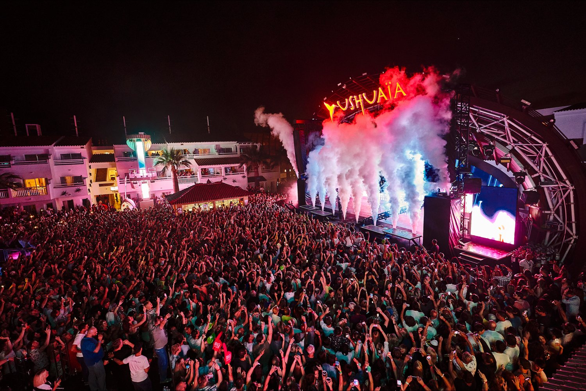
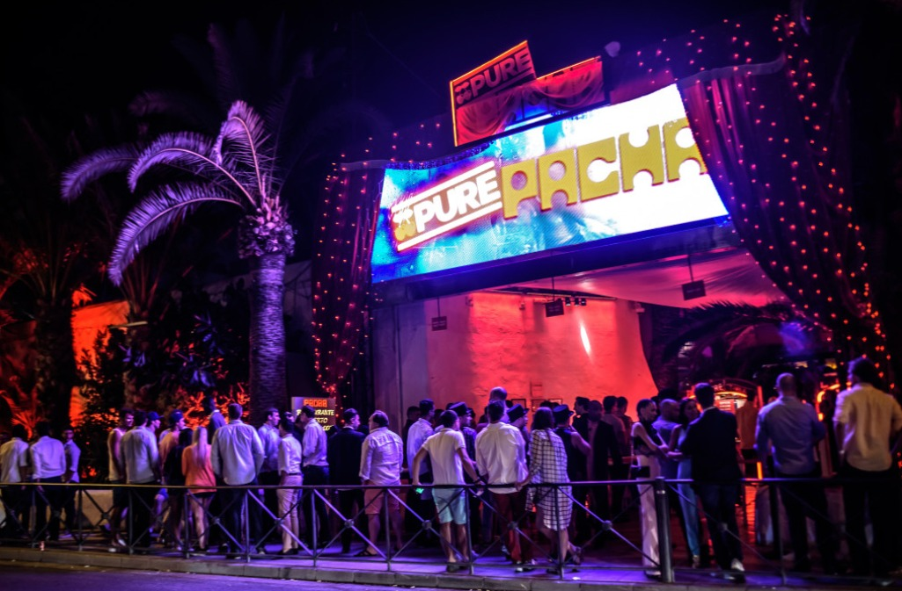
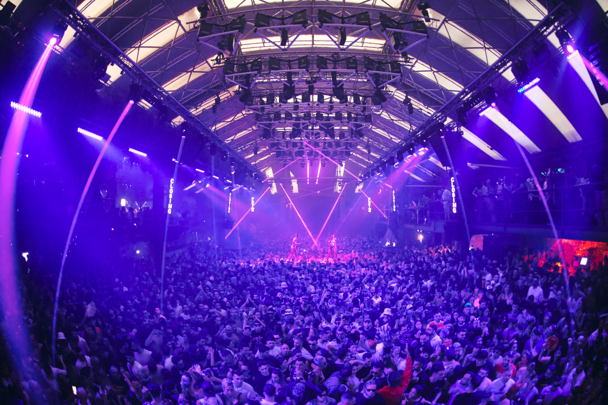
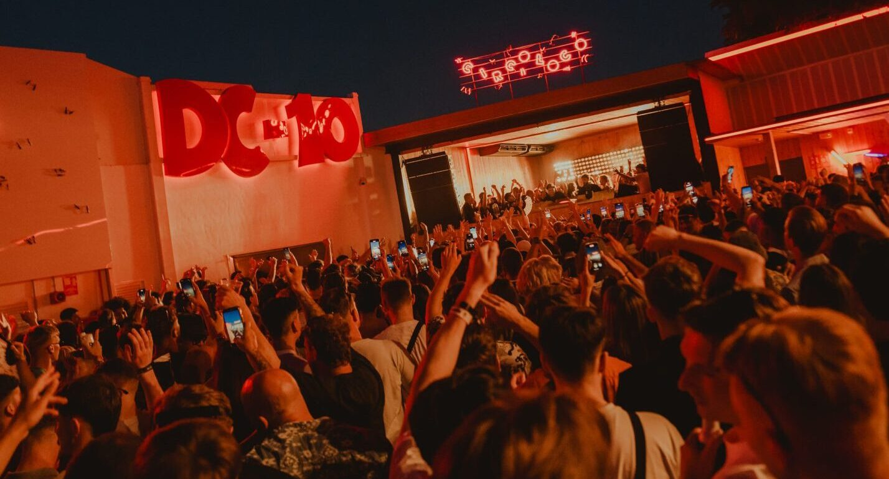
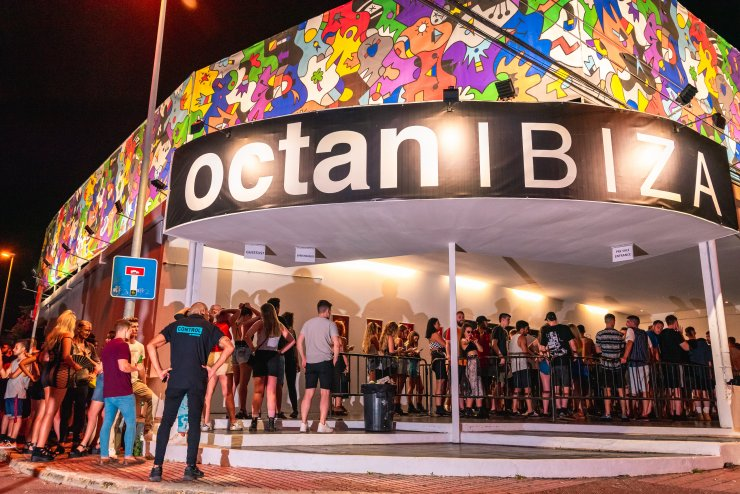
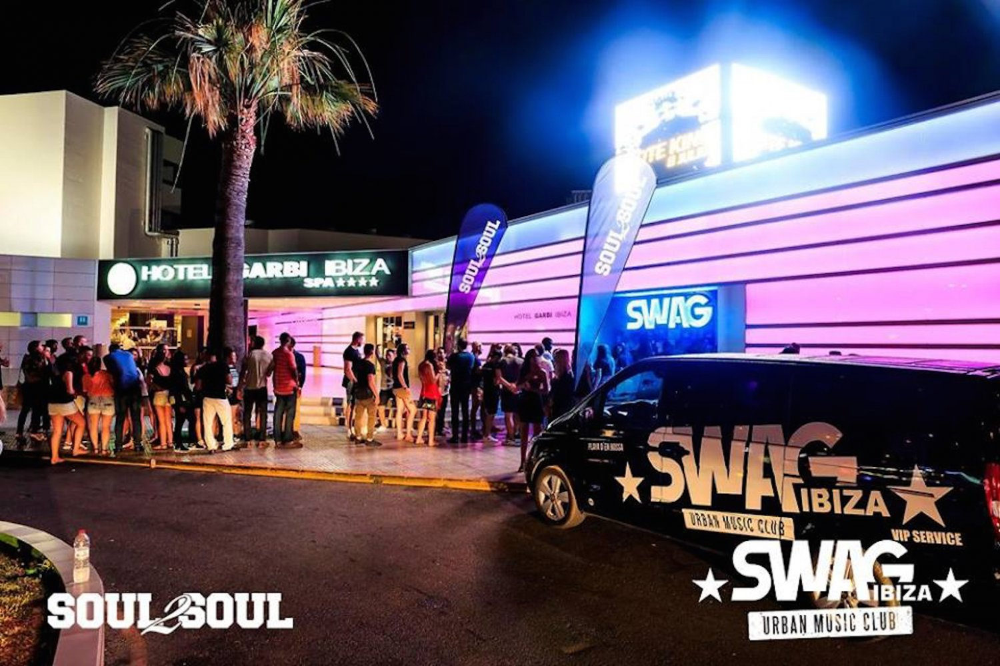

Ushuaïa Ibiza
Ushuaïa és un dels beach clubs més famosos del món, conegut pels festivals a l’aire lliure, piscines espectaculars i DJs internacionals.
Estil musical: EDM, House i Música Electrònica Comercial.
Horari: 17:00 - 00:00

Pacha Ibiza
Pacha és una de les discoteques més icòniques d’Ibiza, amb una llarga història i un ambient exclusiu que combina luxe i festa.
Estil musical: House, Deep House i Música Comercial.
Horari: 00:00 - 06:00

Amnesia Ibiza
Amnesia destaca per les seves festes massives, efectes visuals i sessions amb alguns dels millors DJs del món.
Estil musical: Techno, House i Electrònica.
Horari: 23:30 - 06:00

Hï Ibiza
Considerada una de les millors discoteques del moment, Hï Ibiza ofereix una experiència moderna amb tecnologia, llums i artistes internacionals.
Estil musical: Tech House, EDM i Electrònica Moderna.
Horari: 23:30 - 06:00

DC-10 Ibiza
DC-10 és famosa pel seu ambient underground i les seves sessions de música electrònica fins a la matinada.
Estil musical: Techno i Underground House.
Horari: 23:00 - 07:00

Eden Ibiza
Eden és una discoteca molt popular a Sant Antoni, coneguda per les seves festes juvenils i ambient internacional.
Estil musical: EDM, Drum & Bass i House.
Horari: 22:30 - 06:00

Es Paradis
Es Paradis és una de les discoteques més elegants d’Ibiza, famosa per la seva decoració blanca i les seves festes aquàtiques.
Estil musical: House, Dance i Música Comercial.
Horari: 23:00 - 06:00

Octan Ibiza
Octan ofereix una experiència més underground amb sessions de DJs especialitzats en música electrònica alternativa.
Estil musical: Techno i Minimal.
Horari: 23:59 - 06:00

Swag Ibiza
Swag Ibiza és coneguda pel seu ambient llatí i festiu, amb música urbana i reggaeton fins a altes hores.
Estil musical: Reggaeton, Hip-Hop i Música Urbana.
Horari: 00:00 - 06:00

O Beach Ibiza
O Beach combina piscina, espectacles i música en directe en un ambient luxós davant del mar.
Estil musical: House, Dance i Música Comercial.
Horari: 13:00 - 23:00